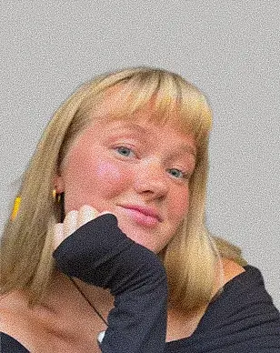
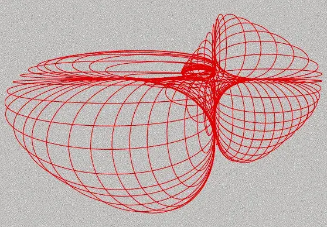

2021
Bliver student fra Silkeborg Gymnasium med studieretningen Musik A / Matematik A
Jeg finder inspiration i keramik, kunst og visuelt design. Fælles for dem er interessen for form, detaljer og fortællinger. På multimediedesign har jeg lært at omsætte mine interesser til digitale løsninger gennem design, kommunikation og teknologi.
Se Min Læring

Visuel identitet
Layout
Typografi
Farver
Research
Brugertest
Wireframes
Prototype
HTML
CSS
JavaScript
Github
Keramik
Kunst
Male
Musik
Bliver student fra Silkeborg Gymnasium med studieretningen Musik A / Matematik A
Arbejder på økologisk café som caféværtinde, hvor jeg opbygger erfaring med kundeservice, ansvar og samarbejde
Går på Engelsholm Højskole på Formlab-linjen keramik / glaspusteri, hvor jeg fordyber mig i kreative processer og håndværk
Flytter til København og arbejder som manager på YONOBI Keramik Café, hvor jeg planlægger og afholder events samt underviser i keramik
Starter på multimediedesign med ønsket om at kombinere kreativitet med digitale løsninger. På 1. semester har jeg udviklet kompetencer inden for design, kommunikation og teknologi
Jeg fortsætter min rejse og ønsker at udvikle mig inden for design, digitale brugeroplevelser og visuel formidling
